Tap or click anywhere to enter fullscreen.
Helping founders, startups, and engineering teams turn complex technical challenges into dependable, production-ready software—from autonomous agent workflows to high-performance web products.
A curated selection of high-impact AI products, scalable web systems, and intelligent automations built with strict performance benchmarks, verified accuracy, and clean architecture.
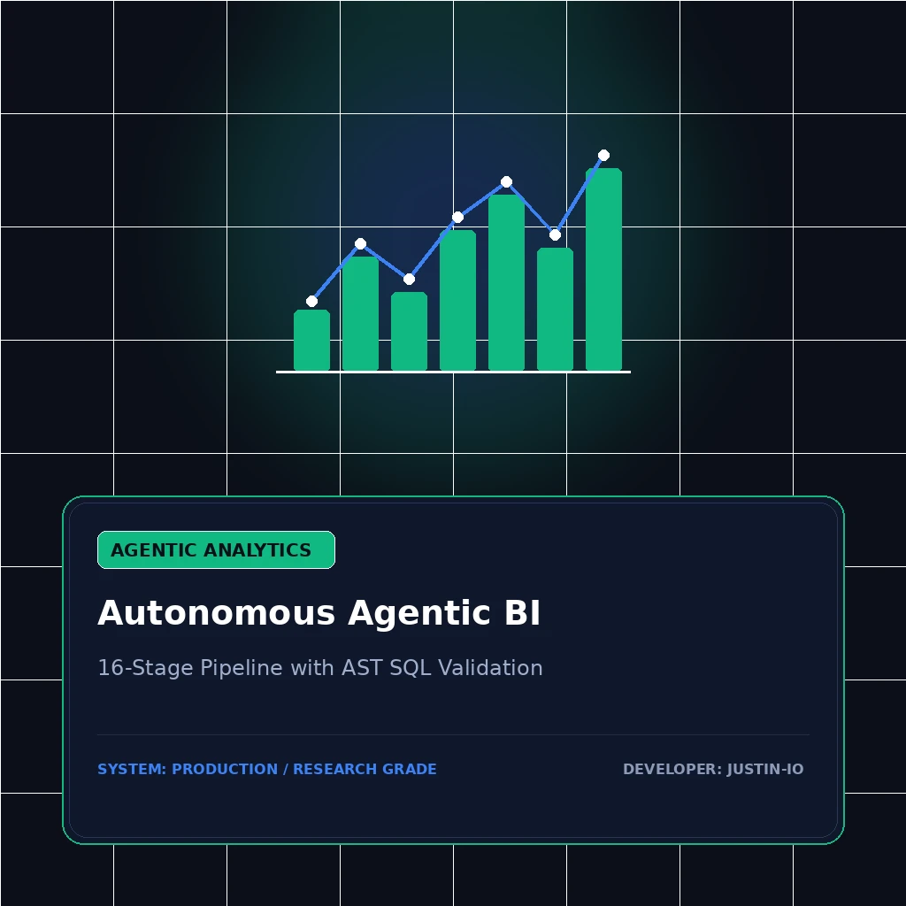
Production-grade conversational analytics platform that transforms plain-English business inquiries into accurate, interactive dashboards and multi-dimensional metric decompositions.
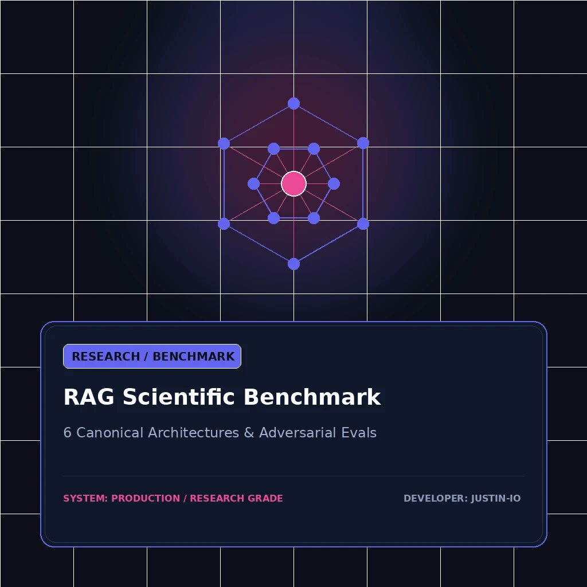
Comprehensive evaluation and benchmarking suite designed to stress-test retrieval pipelines against complex enterprise document corpora before production deployment.
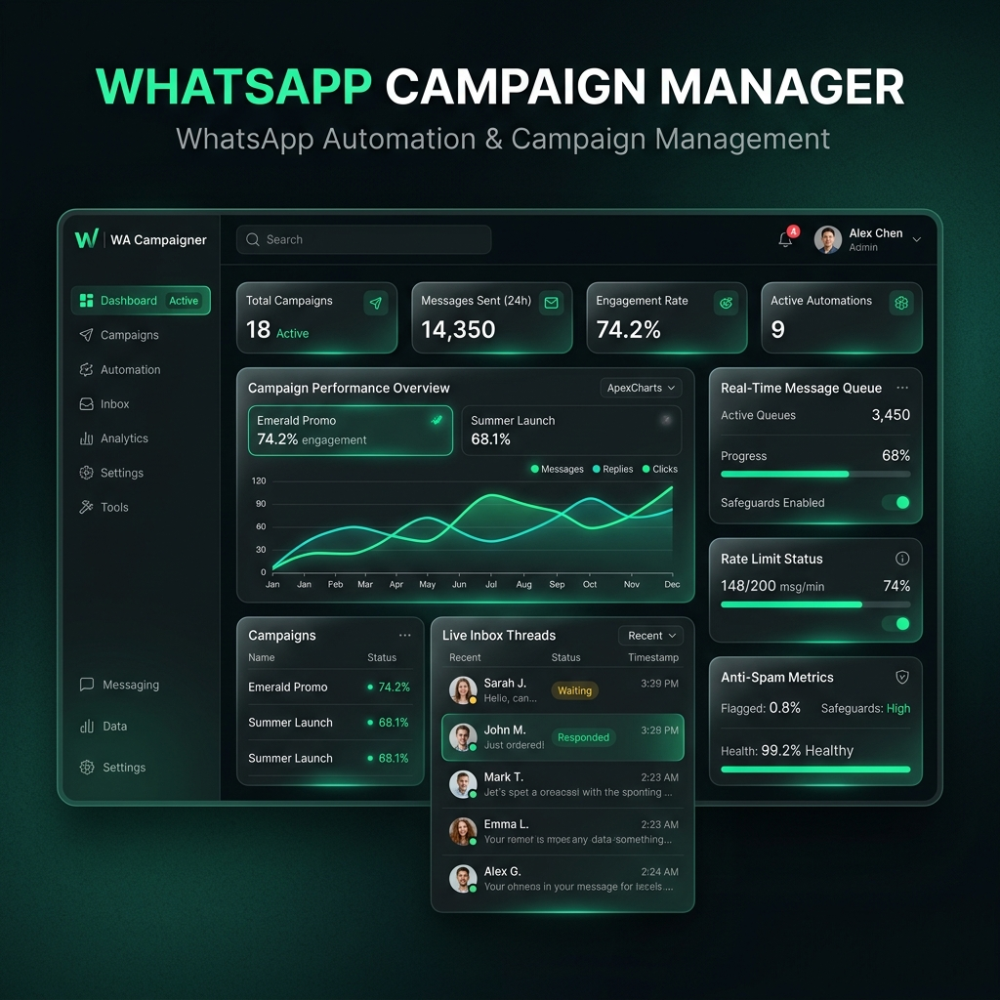
Production-ready WhatsApp automation platform combining multi-device socket connectivity with intelligent anti-spam rate limiting, follow-up scheduling, and live inbox management.
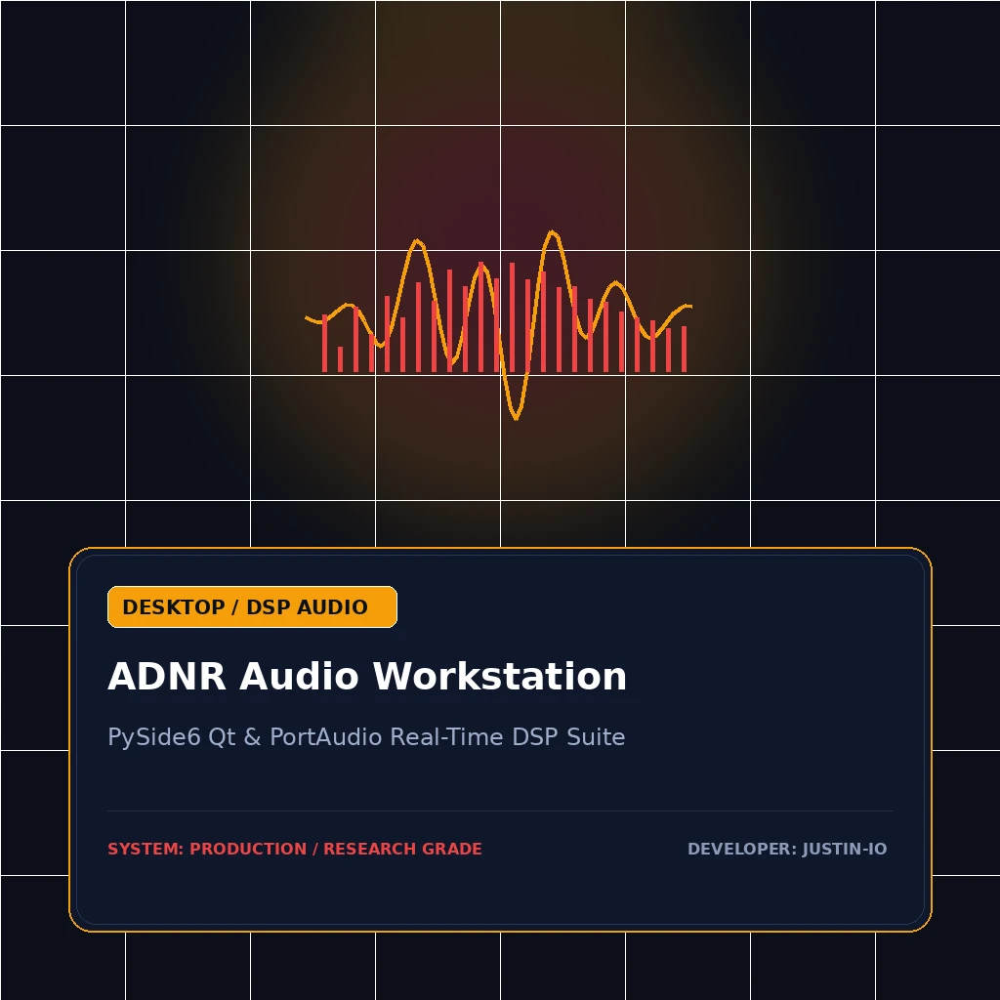
Autonomous industrial equipment health auditing and anomaly detection platform engineered for chiller plants, energy infrastructure, and continuous IoT monitoring.
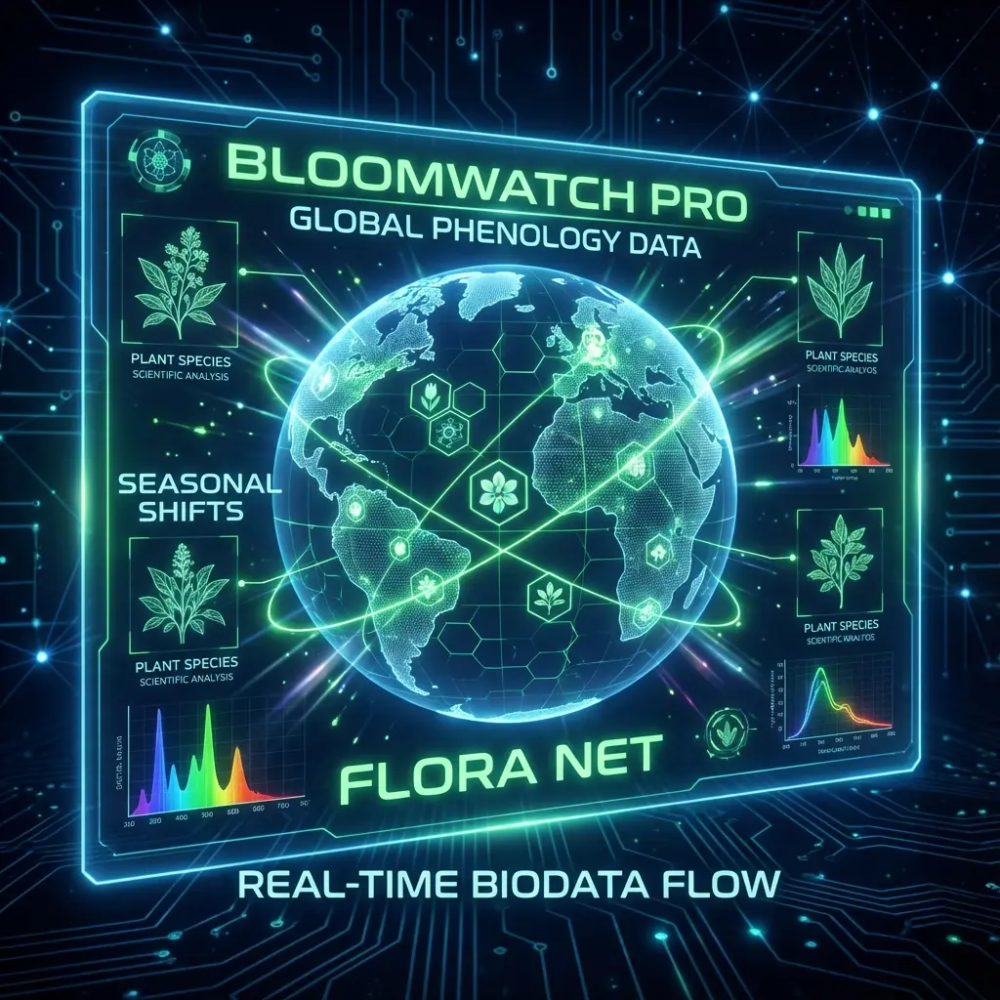
Large-scale satellite analytics web platform mapping global vegetation phenology cycles and agricultural anomalies using NASA Earthdata telemetry and predictive machine learning.
Direct, high-velocity technical partnership from architecture to deployment—delivering clean, maintainable software built for business ROI.
Architecting and deploying production-grade autonomous agent workflows, enterprise RAG pipelines, and conversational copilots that remain strictly grounded in verified facts.
Engineering complete full-stack web products and SaaS applications from initial architecture to live production deployment with TypeScript, React, and Node.
Eliminating operational bottlenecks by building background workers, scheduled pipelines, custom data scrapers, and communication bots that work 24/7.
Reviewing application architectures, performing OWASP vulnerability assessments, and implementing defense-in-depth security measures to protect critical user data.
From initial scoping to production launch, here is how we ensure rapid delivery without sacrificing architectural quality.
We align on your exact product objectives, target users, technical constraints, and definition of success through a focused scoping session.
I design the system architecture, database models, AI/LLM integration strategy, and security boundaries before writing code.
Rapid, modular development in iterative sprints with clean, type-safe code, automated test coverage, and transparent asynchronous progress demos.
Rigorous testing across latency SLAs, edge-case resilience, OWASP vulnerability scans, and AI hallucination guardrails under production loads.
Zero-downtime production deployment, telemetry & error monitoring setup, clean documentation handover, and post-launch maintenance.
Building dependable software that bridges advanced computation with real-world business results.
I am an AI & Full-Stack Systems Engineer based in Kozhikode, India, working with founders, startups, and engineering teams worldwide. I specialize in turning complex technical problems into reliable, high-performance software products.
My background combines the analytical rigor of theoretical mathematics and physics with hands-on systems architecture. Rather than building fragile proof-of-concepts, I engineer robust AI agents, scalable web applications, and automated workflows designed to handle production realities.
Beyond solo client work, I am the founder of HOPE, a technology initiative through which I have trained and mentored over 430+ developers in microcontroller systems, IoT, and cybersecurity. I've also led hackathon teams to 1st Place at NASA Space Apps and published over 70 public repositories.
Focused on shipping clean code that drives business metrics, not over-engineering for the sake of complexity.
Every API endpoint, data pipeline, and AI agent integration is designed with zero-trust protection by default.
Consistent progress updates, clear documentation, direct Loom walkthroughs, and zero technical jargon confusion.
Trained 430+ engineers through HOPE workshops across microcontrollers, hardware security, and full-stack tools.
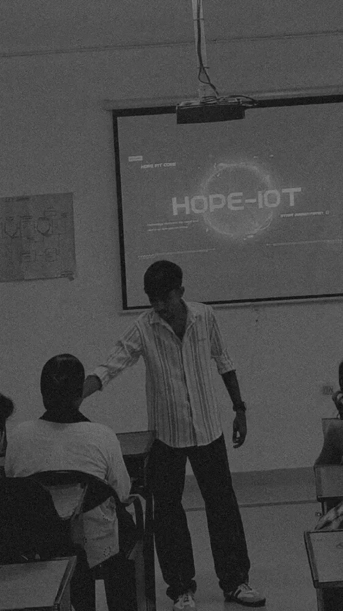
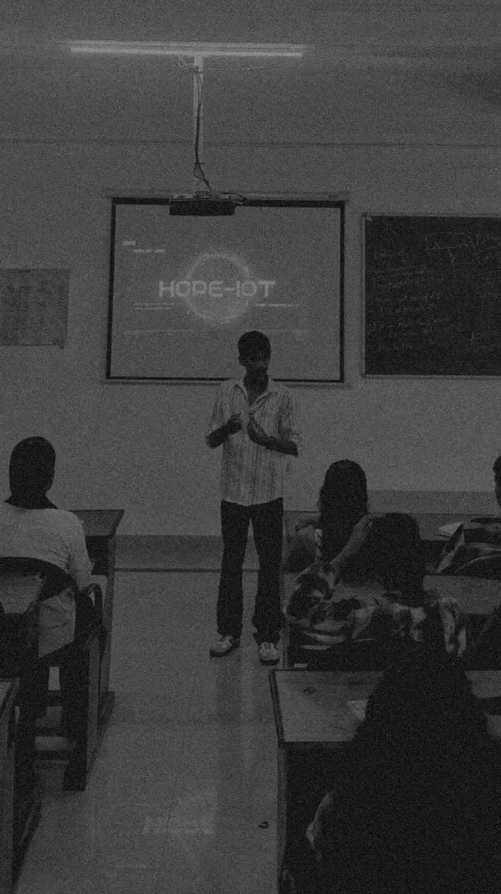
Battle-tested capabilities categorized by domain rather than arbitrary percentage bars.
A curated space for my deeper technical research, discrete spacetime simulations, low-level security tools, and open-source utility engines.
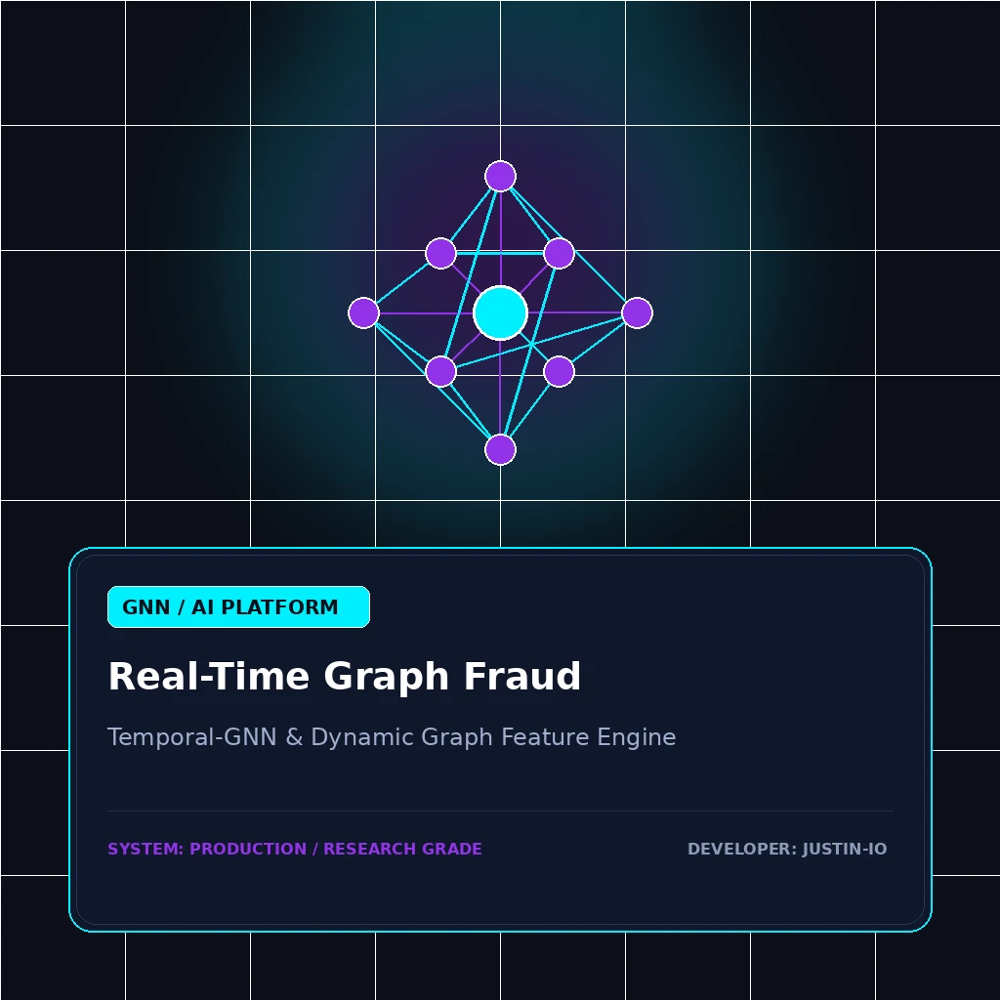
Streaming fraud detection platform featuring an 8-model progression, dynamic graph feature store, and Temporal-GNNs engineered to detect coordinated fraud rings at sub-50ms latency.
View on GitHub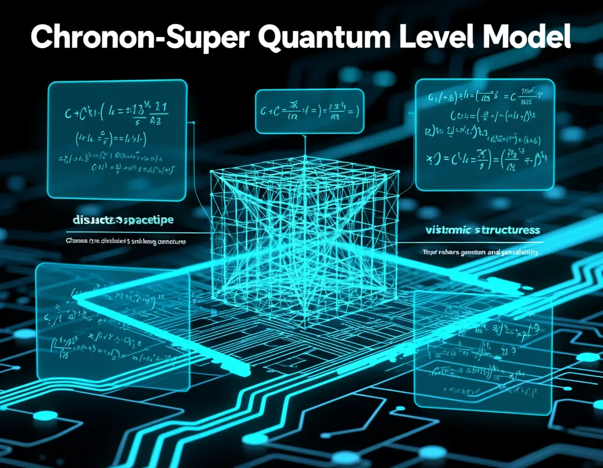
Computational simulation framework modeling spacetime as discrete quantum lattices based on fundamental Chronon time intervals and discrete geometries.
Read Research PaperModular desktop DSP suite engineered with Python 3.11+, PySide6 (Qt), and NumPy/SciPy for real-time PortAudio processing and batch spectral noise reduction.
View on GitHubStealth peer-to-peer messaging network built in TypeScript featuring end-to-end encrypted tunnels disguised as common utility payloads.
View on GitHub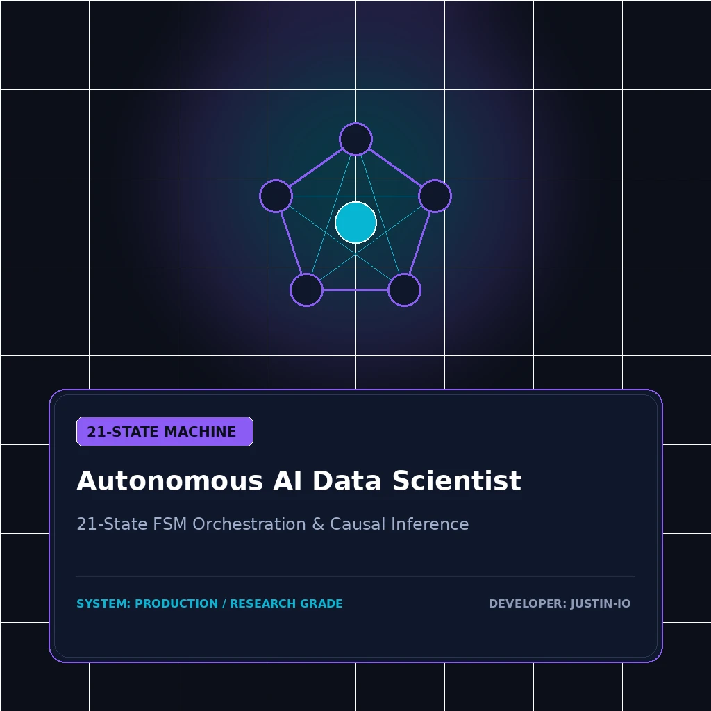
Autonomous data science platform governed by a 21-state deterministic machine with automated feature engineering, Bayesian hypothesis generation, and causal discovery.
View on GitHubESP32 physical hardware module harvesting thermal noise to generate true cryptographically secure random entropy.
View on GitHub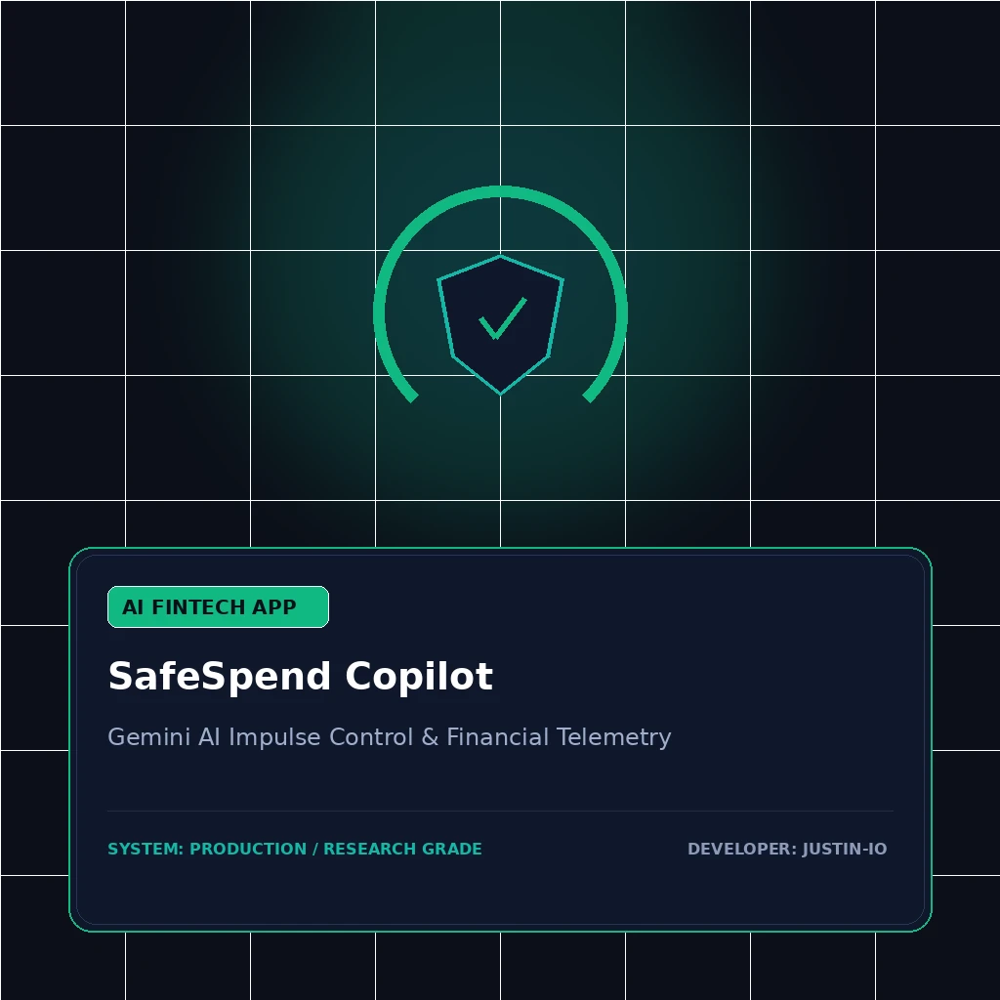
Personal finance application featuring daily safe-spend limits, dopamine delay tracking, and an integrated Gemini AI behavioral financial copilot.
View on GitHub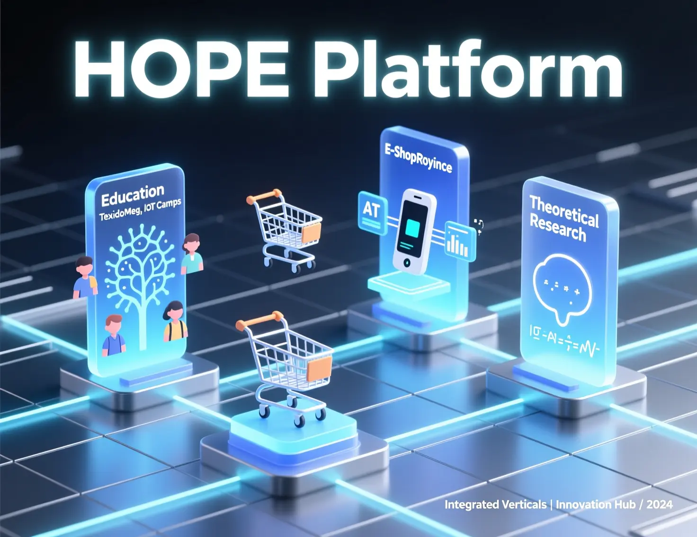
Educational hardware ecosystem, open-source firmware templates, and hands-on microcontroller curricula serving over 430+ students.
View on GitHubExplore comprehensive research papers, security archives, and utilities:
Real-world milestones, competitive awards, and quantified delivery metrics.
Secured 1st Place at NASA Space Apps (Thrissur Edition & ISRO Outreach) and selected as a Global Nominee for the BLOOMWATCH-PRO satellite analytics platform (₹30,000 cash prize).
Secured 1st Place at SINOVA'26 National Intercollegiate Hackathon hosted by SCMS School of Technology for rapid systems development (₹30,000 prize).
Trained and mentored over 430+ engineering students in microcontroller firmware, hardware security audits, and hands-on IoT systems engineering.
Earned Certified Ethical Hacker credential at age 14, establishing early depth in low-level systems architecture, vulnerability auditing, and defensive security.
"Hari combines uncommon analytical depth with the speed of a startup builder. From orchestrating complex multi-agent pipelines to hardening APIs and delivering clean, responsive interfaces, his focus on production durability, security, and measurable client results is exceptional."
Have an ambitious product idea, need an intelligent automation tool, or want to augment your engineering team? Submit an inquiry below.
I partner directly with founders, early-stage startups, and product teams to design, architect, and deploy high-converting AI products, automations, and resilient web software.
Open for Contract Builds & Q4 Projects
Kozhikode, Kerala, India (Remote Worldwide)